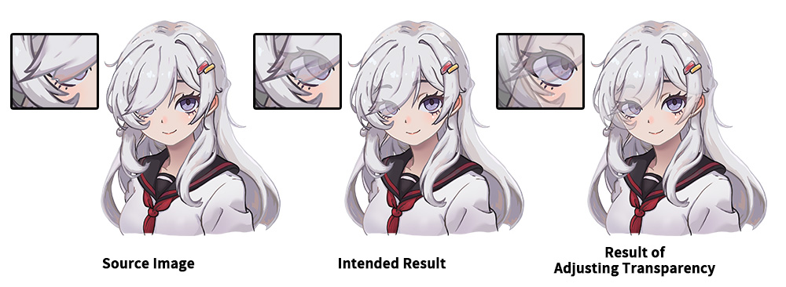
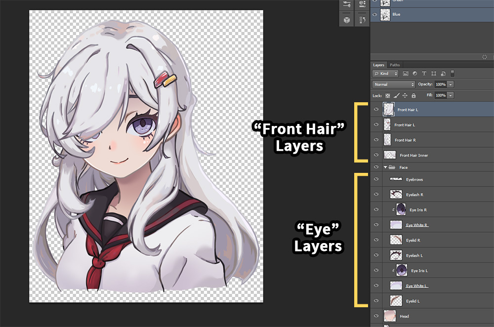
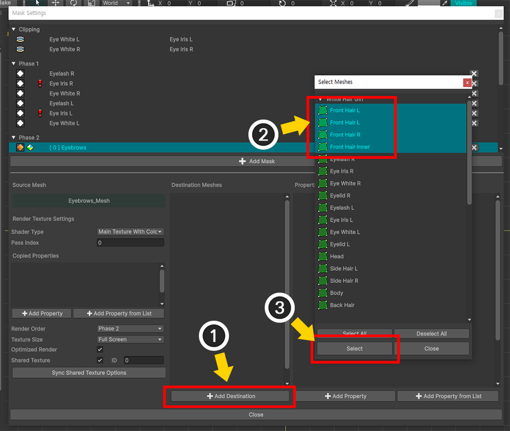
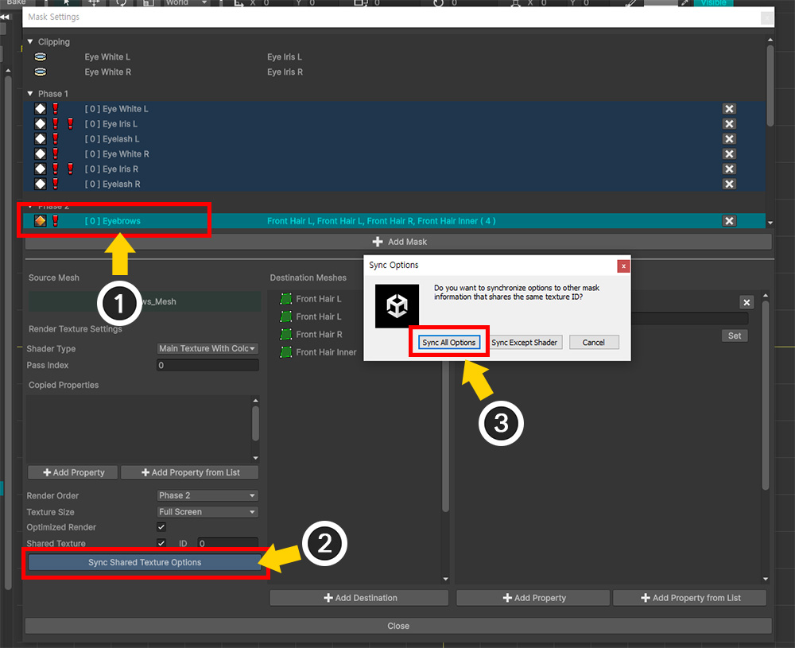
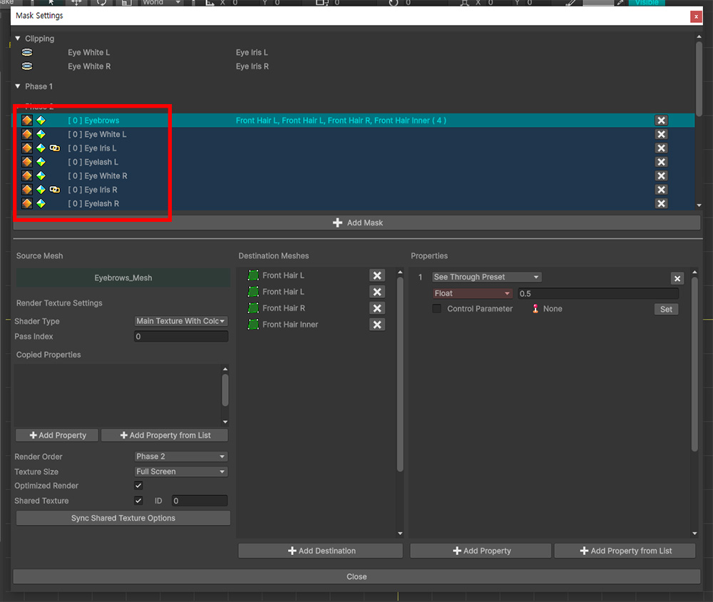

AnyPortrait > 메뉴얼 > 투과(See-Through) 효과
투과(See-Through) 효과
1.6.0

"앞 머리카락이 한쪽 눈을 가린 캐릭터 일러스트"입니다.
이러한 디자인의 캐릭터를 예쁘게 표현하고자 할 때, 가운데 그림처럼, "머리카락에 눈이 살짝 비쳐보이는 만화적 연출"을 활용하곤 합니다.
이것을 AnyPortrait를 포함한 애니메이션 툴에서 어떻게 표현해야할 지 고민해봅시다.
가장 쉬운 방법은 "머리카락" 레이어의 일부를 약간 투명하게 만드는 것입니다.
하지만 의도했던 것(가운데 그림)과 머리카락을 조금 투명하게 만든 결과(오른쪽 그림)는 확연하게 차이가 있습니다.
"머리카락" 레이어가 반투명해지면, "눈" 레이어 뿐만 아니라 "얼굴", "다른 머리카락" 레이어들이 모두 투과되어 보이면서 다소 지저분하게 표현이 됩니다.

사실, 이것을 구현하는 것은 생각보다 쉽지 않습니다.
"눈" 레이어가 "머리카락" 레이어보다 뒤쪽에 위치한 상태에서, 불투명한 "머리카락"보다 앞에서 렌더링될 수 없기 때문입니다.
이때, AnyPortrait v1.6.0에 추가된 투과 효과(See-Through)를 이용하면 의도한 것을 표현할 수 있습니다.

개선된 마스크 기능에서는 렌더 텍스쳐를 생성할 때 기존의 "알파 마스크 쉐이더(Alpha Mask Shader)" 대신 "일반 쉐이더 (Normal Shader)"를 이용할 수도 있습니다.
쉐이더가 변경되면 화면에 출력되는 것과 유사하게 렌더 텍스쳐에 렌더링이 됩니다.
이어서, 이 렌더 텍스쳐를 대상 메시로 전달할 때, "Alpha 채널에서의 알파 클리핑 연산"이 아닌 "RGB 채널의 색상 보간 연산"을 하도록 설정합니다.
이 방식으로 마스크 기능을 활용하면 투과 효과(See-Through)를 만들 수 있습니다.
참고
이 페이지에서 소개하는 예시에서는 투과 효과 뿐만 아니라, 공유 텍스쳐, 마스크 쉐이더 변경 및 마스크 체인이 모두 활용됩니다.
이에 대한 자세한 설명은 다음의 메뉴얼에서 확인하세요.
- 마스크
- 마스크와 커스텀 쉐이더
- 마스크 체인
투과 효과의 처리 결과와 일반적인 클리핑 마스크의 처리 결과는 서로 반대인 것처럼 보입니다.
투과 효과에서는 마스크를 생성하는 메시가 오히려 클리핑되어 렌더링되는 것처럼 보이기 때문입니다.
그래서 투과 효과를 "클리핑 마스크의 변형"보다는, "마스크의 작동 방식을 활용한 예시"로 보는 것이 좋습니다.

캐릭터 일러스트를 AnyPortrait 에디터에 가져온 화면입니다.
여러 "Eye..." 메시들이 4개의 "Front Hair..." 메시들에 비쳐보이도록 만들어봅시다.
그 전에, "Eye Iris L/R" 메시들은 "Eye White L/R" 메시로의 클리핑이 설정되어 있다는 점도 같이 체크해주세요.

(1) "Eye..." 메시들 중 하나를 선택합니다.
(2) Open Mask Settings 버튼을 누릅니다.

(1) Add Mask 버튼을 누릅니다.
(2) 투과 효과를 적용할 "Eye" 메시들을 Ctrl 키를 눌러서 모두 선택합니다.
(3) Select 버튼을 누릅니다.

선택된 "Eye" 메시들에 대한 마스크 데이터들이 생성되었습니다.
(1) 마스크 데이터들 중 하나를 선택합니다.
(2) Shader Type의 값을 "Main Texture With Color"로 변경합니다.
이 옵션의 값은 화면에 렌더링하는 것과 동일한 쉐이더로 마스크 렌더 텍스쳐를 렌더링하도록 만듭니다.
유니티 2023 및 이후 버전의 프로젝트에서 렌더 파이프라인이 URP으로 설정되어 있다면, "Main Texture With Color" 옵션이 정상적으로 동작하지 않습니다.
이 이슈에 대한 설명과 해결 방법은 관련 페이지에서 확인해보세요.

(1) 앞서 확인한 것처럼, "Eye Iris L/R" 메시들이 "Eye White L/R" 메시로부터 클리핑이 되고 있었기 때문에 마스크 체인 및 렌더 순서 문제가 발생하고 말았습니다. (관련 페이지)
(2) 렌더 순서 문제를 해결하기 위해서 선택된 마스크 데이터의 Render Order의 값을 "Phase 2"로 변경합니다.

렌더 텍스쳐 생성 옵션을 위와 같이 변경합니다.
- Texture Size를 꽤 큰 값으로 변경합니다. 마스크 체인이 발생하거나 공유 텍스쳐를 이용할 때는 마스크 품질을 위해서 높은 해상도를 설정하는 것을 고려해야합니다.
- Shared Texture를 활성화하고 ID를 지정합니다. "Eye" 메시들이 공통의 렌더 텍스쳐로 렌더링을 하도록 만들기 위함입니다. (여기서는 ID 값으로서 "0"을 입력했습니다.)

(1) Add Destination 버튼을 누릅니다.
(2) 모든 "Front Hair..." 메시들을 Ctrl 키를 눌러서 모두 선택합니다.
(3) Select 버튼을 누릅니다.

(1) Add Property 버튼을 누릅니다.
(2) 추가된 프로퍼티의 프리셋 타입을 "See Through Preset"으로 변경합니다.

투과 효과 프리셋에서는 보조 파라미터로서 "투과율"을 설정할 수 있습니다.
(1) Float형 추가 파라미터에 "0~1" 사이의 값(여기서는 "0.5")을 입력합니다.
이제 투과 효과를 위한 마스크 데이터 설정은 완료되었습니다.
이 예제에서는 여러개의 "Eye..." 메시들이 한꺼번에 투과가 되어야 합니다.
따라서 다른 마스크 데이터들이 동일한 공유 텍스쳐로 렌더링을 하도록 설정을 이어서 합시다.

(1) 다른 마스크 데이터를 선택합니다.
(2) Shared Texture를 체크하고 ID 항목에 동일한 값(여기서는 "0")을 입력합니다.
나머지 모든 마스크 데이터에도 동일하게 설정합니다.

(1) 모든 마스크 데이터의 공유 텍스쳐를 설정하는 작업이 완료되면 위와 같이 수많은 경고 아이콘이 보여질 수 있습니다.
Shared Texture 옵션 외에도 아직 Shader Type이나 Render Order 등의 옵션이 아직 동기화되지 않았기 때문입니다.

(1) 처음에 선택했던 마스크 데이터를 다시 선택합니다.
(2) Sync Shared Texture Options 버튼을 누릅니다.
(3) 메시지가 나타나면 Sync All Options 버튼을 누릅니다.

모든 "Eye..." 메시의 마스크 데이터들의 투과 효과 설정이 완료되었습니다.

마스크 설정 다이얼로그를 닫고 결과를 확인해봅시다.
눈 메시들이 앞 머리카락을 투과하여 렌더링되는 것을 볼 수 있습니다.
투과율에 0.5를 입력했기 때문에, 50% 정도 투과되고 있습니다.
투과율을 고정값이 아닌 컨트롤 파라미터를 이용하여 제어하는 방법도 알아봅시다.

(1) 새로운 컨트롤 파라미터를 생성합니다.
(2) 컨트롤 파라미터의 이름을 설정하고 Float 타입으로 설정합니다.
(3) 값 범위를 "0 ~ 1"로 설정합니다.

(1) 마스크 설정 다이얼로그를 열고 프로퍼티를 가진 마스크 데이터를 선택합니다.
(2) 프로퍼티의 옵션 중 Control Parameter를 체크하고 Set 버튼을 누릅니다.
(3) 앞서 만든 컨트롤 파라미터를 선택합니다.
(4) Select 버튼을 누릅니다.

(1) 이제 컨트롤 파라미터에 따라서 (2) "Eye..." 메시의 투과율이 바뀌는 것을 볼 수 있습니다.

Bake를 하고 유니티 씬에서 확인해봅시다.
컨트롤 파라미터를 조절하여 캐릭터의 눈이 머리카락을 투과하여 렌더링되는 것을 볼 수 있습니다.